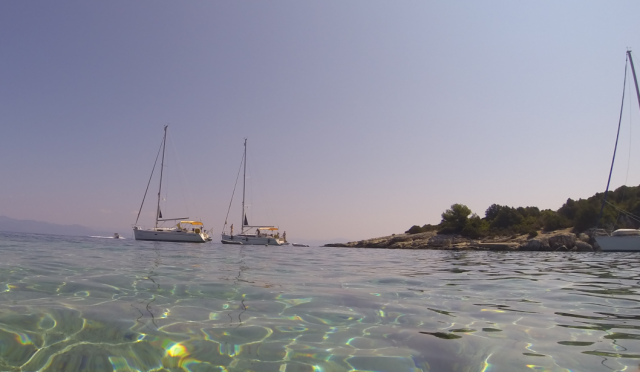
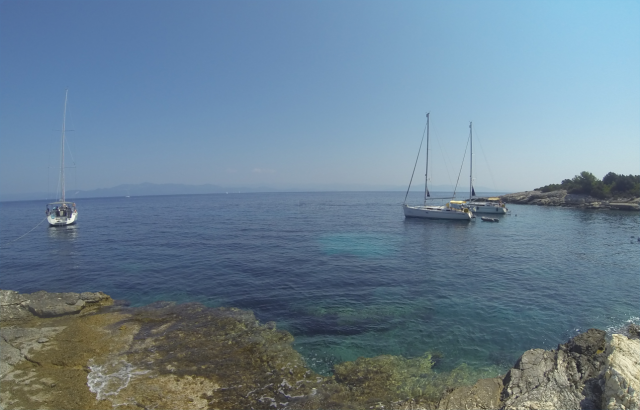
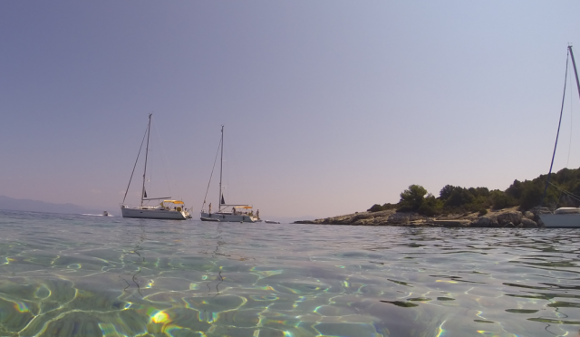
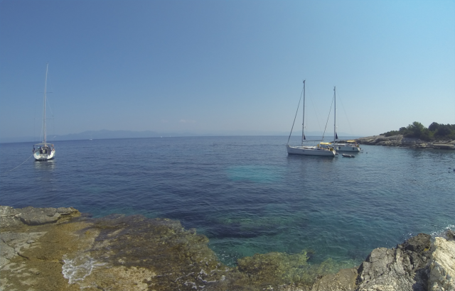
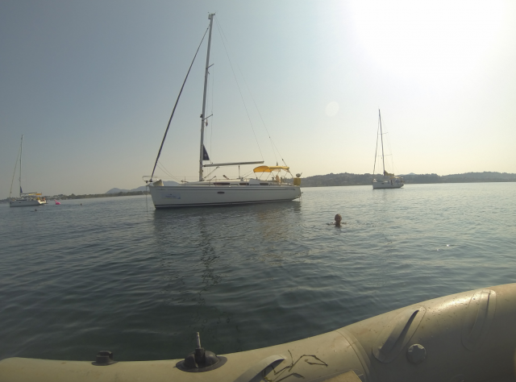
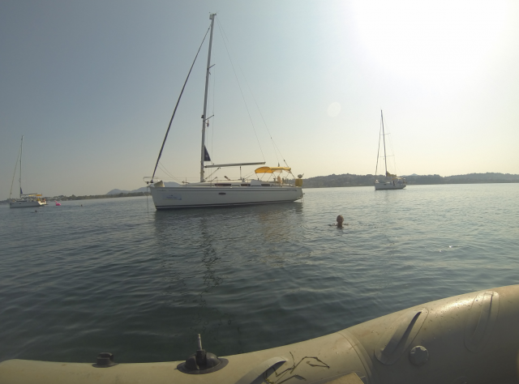

After dabbling in a bit of dinghy sailing and being invited to crew for a friend last year, I've been bitten by the sailing bug again. The GF and I decided to charter a skippered yacht for our summer holiday this year.
We found a Dutch company, TipTop Sailing, who were able to provide a Bavaria 34 and the skipper flew in from the Netherlands last minute to join us!
It's hard to imagine how we could have crammed more adventure into a single trip. We spent the week island hopping through the beautiful Ionian sea. Mid-week we encountered a brief but severe storm that produced a tornado that swept over us. An adrenaline pumping ride followed, where we were unable to get the sails furled before it hit. The boat was slammed down to the water and the main ripped in two.
The following day I was sent up the mast to unjam the shredded main and fortunately we were able to source and rig a replacement. Thereafter we spent the rest of the week in relatively calm conditions. Wonderful week, can't wait for the next trip.

 
 
